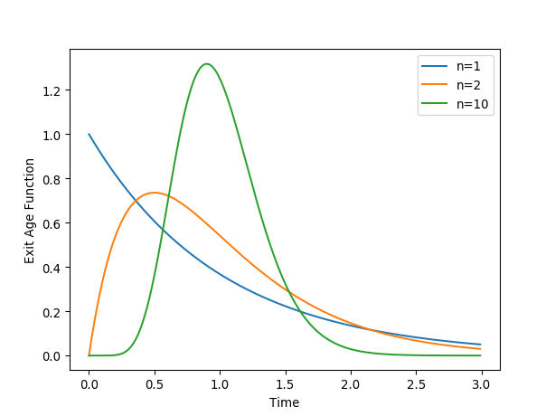

Tanks in Series¶
N-CSTR (Continuously Stirred Tank Reactor) or Tanks in Series model
-
class
rtdpy.ncstr.Ncstr(n, tau, dt, time_end)[source]¶ Bases:
rtdpy.rtd.RTDCreate N CSTR in series (N-CSTR) AKA Tank in Series Residence Time Distribution (RTD) model. [1]
\[E(t) = \frac{1}{\tau}\left(\frac{t}{\tau}\right)^{n-1} \frac{n^n}{\left(n-1\right)!} \text{exp}\left[\frac{-nt}{\tau}\right]\]Parameters: - tau : scalar
Mean residence time of all CSTRs.
tau>0- n : scalar
Number of CSTRs. Can be a real number
n>0- dt : scalar
Time step for RTD.
dt>0- time_end : scalar
End time for RTD.
time_end>0
References
[1] (1, 2) Levenspiel O. (1999) “Chemical Reaction Engineering: Third Edition” John Wiley & Sons, Inc. Examples
>>> import matplotlib.pyplot as plt >>> import rtdpy >>> for n in [1, 2, 10]: ... a = rtdpy.Ncstr(tau=1, n=n, dt=.01, time_end=3) ... plt.plot(a.time, a.exitage, label="n={}".format(n)) >>> plt.xlabel('Time') >>> plt.ylabel('Exit Age Function') >>> plt.legend() >>> plt.show()
-
dt¶ Time step for RTD
-
exitage¶ Exit age distribution for RTD
-
exitage_norm¶ Normalized Exit Age Distribtion for RTD
-
frequencyresponse(omegas)¶ Parameters: - omegas : ndarray
frequencies at which to evaluate magnitude response
Returns: - magnitude : ndarray
frequency magnitude response at omegas
-
funnelplot(times, disturbances)¶ Return maximum output signal due to square disturbances.
Uses method from [Garcia] . Also returns meshgrid for times and disturbance inputs for ease of plotting.
Parameters: - times : array_like, size m
Times to determine funnelplot
- disturbances : array_like, size n
Disturbance magnitudes
Returns: - x : 2D meshgrid size (mxn)
times
- y : 2D meshgrid size (mxn)
disturbances
- response : 2D meshgrid size (mxn)
maximum response at (x,y)
References
[Garcia] (1, 2) Garcia-Munoz S., Butterbaugh A., Leavesley I., Manley L.F., Slade D., Bermingham S. (2018) A flowhseet model for the development of a continuous process for pharmaceutical tablets: An industrial perspective. “AIChE Journal”, 64(2), 511-525.
-
integral()¶ Integral of RTD
-
mrt()¶ Mean residence time of RTD
-
n¶ Number of CSTRS in series
-
output(inputtime, inputsignal)¶ Convolves input signal with RTD
Parameters: - inputtime : ndarray
Times of input signal, which must have same dt as RTD. Size m
- inputsignal : ndarray
Input signal. Size n
Returns: - outputsignal : ndarrary
Output signal at same dt. Size m + n -1
-
sigma()¶ Variance of RTD
-
stepresponse¶ Step respose of RTD
-
stepresponse_norm¶ Normalized step respose of RTD
-
tau¶ Mean Residence Time of all tanks combined
-
time¶ Time points for exitage function
-
time_end¶ Last time point for RTD